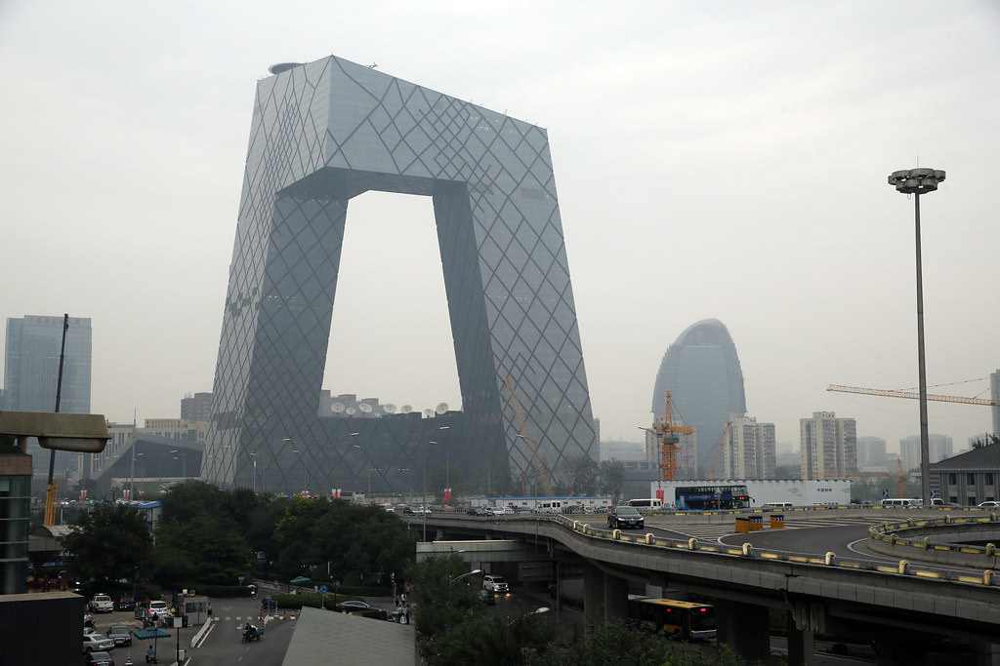

1. Paris, France: The "City of Light" is renowned for its iconic landmarks, such as the Eiffel Tower and Notre-Dame, as well as its museums, art galleries, and fashion scene.

2. Tokyo, Japan: Tokyo is one of the largest cities in the world. It is known for its unique blend of traditional and modern culture, its cutting-edge technology, and its diverse food scene.

3. Rome, Italy: The "Eternal City" is home to ancient ruins, such as the Colosseum and the Roman Forum, as well as renowned works of art, including the Sistine Chapel.

4. New York City, USA: "The Big Apple" is famous for its skyline, its shopping, its food, and its numerous cultural attractions, such as Central Park, the Metropolitan Museum of Art, and Broadway.

5. London, UK: The capital of the United Kingdom is known for its historic landmarks, such as Buckingham Palace and the Tower of London, as well as its bustling cultural scene, including its museums, theaters, and music venues.

6. Istanbul, Turkey: It is a historic city with a rich cultural heritage, reflecting its position as a former capital of the Ottoman Empire. This city straddles two continents and blends Turkish, Ottoman, and Byzantine cultures, with landmarks like the Hagia Sophia, the Topkapi Palace, and the Grand Bazaar.

7. Rio de Janeiro, Brazil: This coastal city is famous for its iconic Cristo Redentor statue, its beaches, and its vibrant nightlife, as well as its annual Carnival celebration.

8. Beijing, China: The capital of China is home to ancient landmarks, such as the Forbidden City and the Great Wall of China, as well as modern attractions, including the Bird's Nest Olympic Stadium.
9. Bangkok, Thailand: Bangkok is the capital city of Thailand and one of the most popular tourist destinations in Southeast Asia. Known for its vibrant street life and colorful markets, the city is a hub of activity and excitement, attracting millions of visitors each year. The bustling capital of Thailand is known for its street food, its shopping, its temples and palaces, and its vibrant nightlife.

10. Sydney, Australia: The largest city in Australia is famous for its iconic Opera House and Harbour Bridge, as well as its beaches, parks, and vibrant cultural scene.

Contact us to learn more about these places and plan your tour with AS Travels.